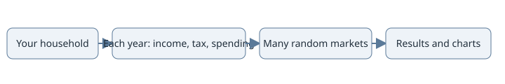
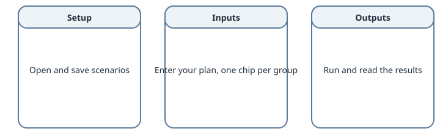

Overview
Purpose: for new users, a quick start, a map of the tabs and the words these guides use.
Walk Me Through It (WMTI) plans a household’s money over many years. You enter ages, pay, accounts, spending, homes, cars, loans and benefits once. The model plays the plan forward year by year and shows what is left, the tax paid and the chance the money lasts. It models US tax law and is not advice.
It is one web app (https://rthornton3i.github.io/wmti/). The model runs in your browser and nothing you enter is sent anywhere.


How the planner turns your household into results.
Quick start
Open the app (see Using the toolkit). A first visit starts the walkthrough on the example household (fictional figures).
Answer the walkthrough. Skip keeps a figure as it is. The menu reopens it.
Read the headline figures. They stay at the top of every tab. The chance of running out is on Outputs, Summary.
Save a scenario, change one setting, then save it under another name.
Compare the two. Both use the same random draws, so the setting, not luck, explains the gap.
Optional: Optimize. It searches strategy settings and shows the best next to yours. Nothing changes until you apply it.
Sample results shows typical results.
What each tab is for


The three tabs. On a wide window they sit side by side.
Where |
What it is for |
|---|---|
Setup |
Saved scenarios, the household, run settings and inflation. |
Inputs, Accounts |
Accounts, the withdrawal order and where surplus cash goes. |
Inputs, Income |
Pay, raises, the age pay stops and the earnings history. |
Inputs, Children |
Each child’s years, daycare, college and the 529. |
Inputs, Home |
Homes owned or bought later, rent and utilities, on one timeline. |
Inputs, Cars |
Cars owned, bought later or leased, on a timeline. |
Inputs, Loans |
Loans, extra payments, refinancing and payoff. |
Inputs, Benefits |
Retirement plan, medical plan, HSA, dependent care FSA and beneficiaries. |
Inputs, Healthcare |
The yearly cost of care. |
Inputs, Expenses |
Monthly bills, one-off costs and charity. |
Inputs, Retirement |
Social Security, Medicare and spending in retirement. |
Inputs, Strategies |
Roth conversion, Roth backdoor, charitable distributions and Relocation (see States: taxes, living costs and moving). All off by default. |
Outputs, Summary and Plots |
Headline figures, tables and charts. |
Outputs, Compare |
Two scenarios on the same draws, with the settings that differ. |
Outputs, Optimize |
A search for better strategy settings (see Finding the best settings). |
Final report (PDF) in the menu saves the results and up to four scenarios into one PDF (see The app). Each group’s rules are in Model rules by group.
Words used in these guides
- Scenario
One complete set of settings, saved under a name (Compare’s Config A and Config B and the Python API call it a config). A scenario file holds the same settings as JSON.
- Monte Carlo
Running the plan many times with different random returns, inflation, raises and costs. The spread of results shows how much luck matters. Each run comes from the seed.
- Seed
The number that fixes the random draws. The same seed and settings give the same results.
- Middle half average
The yearly tables and charts average the runs whose final worth is between the 25th and 75th percentile, so one lucky or unlucky run cannot skew them.
- Terminal tax rate
An optional flat rate on Traditional (pre-tax) money left at the end. Blank taxes the beneficiaries’ payout instead (see Beneficiaries).
- After-tax value
What beneficiaries keep on the Summary: accounts, homes and cars less loans, estate and inheritance taxes, the beneficiaries’ tax on Traditional money and selling costs, as if sold on the last day. It can exceed the median final worth, which counts accounts only.
- Surplus
Cash left in a year after spending, taxes and saving. It goes to the cash, Investments and 529 accounts by the shares you set under Where surplus cash goes.
- Lane
One row of the ownership timeline: the primary residences and rent periods, each other home, or one chain of cars that replace each other.
- Replaces
A timeline Add choice: a future home, car or lease takes the place of one you own, in its lane, from its sale year.